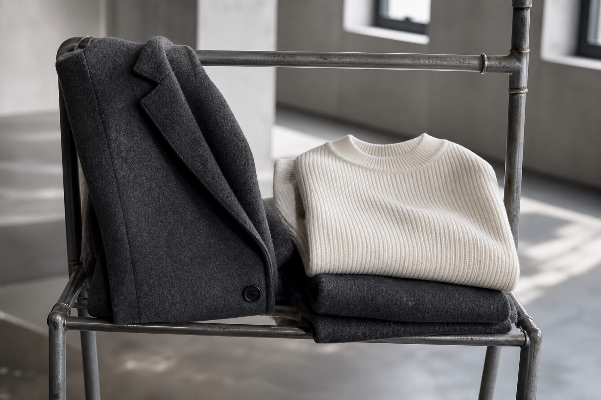
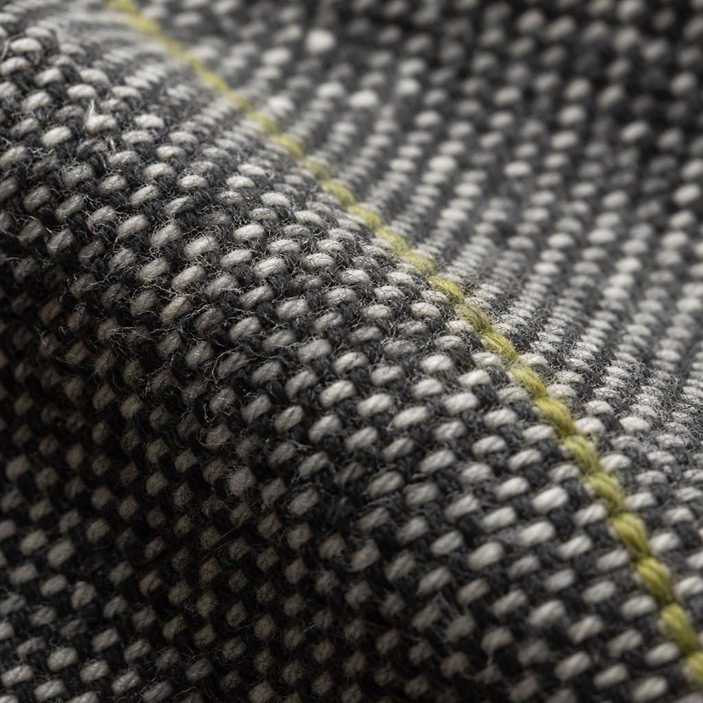

This weekend, only
Saturday 11–7 · Sunday 12–5 · Doors on the hour. Cash or card. Bring patience for the fitting mirror.

What hits the rack
Overcoats, knits, and truncated runs that never made the lookbook. Sample sizes lean 4–8. Everything is final sale.
Built to be handled
Wool, dry cotton, and the odd chartreuse stitch that marks a studio sample. Try it on. If it fits, it leaves with you today.

Where
418 Binder Street · 3rd floor
Enter under the green lamp. Buzz VALE.
No holds. No returns. Friends welcome if they can stand still in a narrow loft.